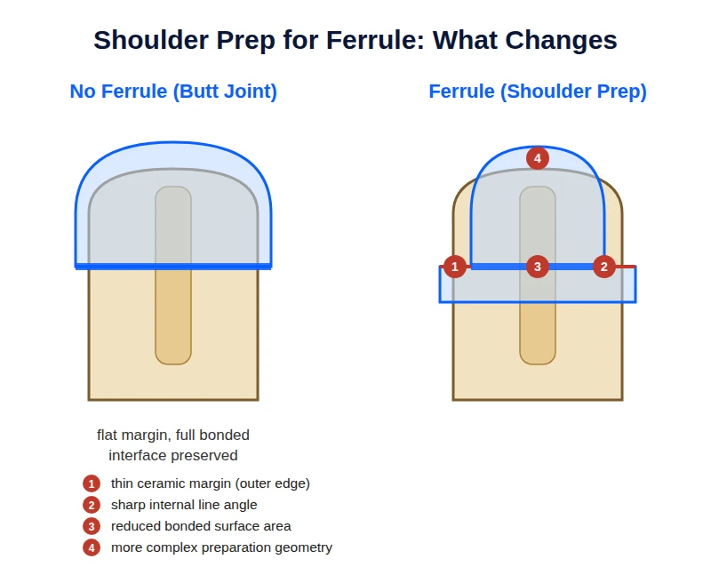
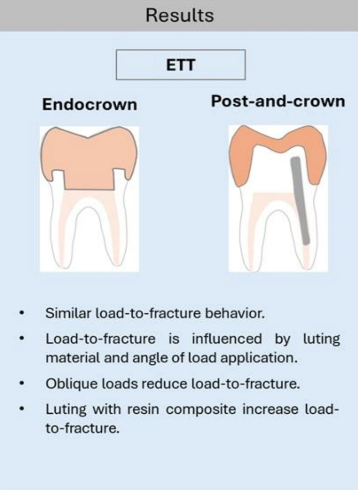

نسخه استخراجشده؛ ترجمه یا تأیید علمی انجام نشده است. وضعیت: captured
برای ساختن شولدر باید دیوارهی سرویکال را بتراشی؛ پس بخشی از بایوریم را مصرف میکنی. این تراش برای اندوکراون چه میخرد و چه میفروشد؟
در مطالعهای که گروه بدون فرول قویتر درآمد، توضیح این بود: وقتی برای فرول شولدر میتراشی، سطح صاف و پهنی که نیروی جویدن مستقیم رویش مینشیند کوچکتر میشود، چون بخشی از آن صرف ساخت شولدر شده. سطح کمتر یعنی پخش ضعیفتر نیروی عمودی، و احتمالاً همین مقاومت را پایین میآورد.

ولی این را نباید علیت قطعی گرفت؛ تراش شولدر همزمان چند چیز را عوض میکند:
مبادلهی فرول و بایوریم: اگر طرح فرولدار به تراش بیشتر ساختار سالم سرویکال نیاز داشته باشد، ممکن است حذف این ساختار بخشی از منفعت مکانیکی احتمالی را کاهش دهد. این فرضیه هنوز مستقیماً و کنترلشده آزموده نشده است. افت مقاومت را نمیتوان صرفاً به حذف ساختار سرویکال نسبت داد؛ یک یا چند تغییر همزمان تراش میتوانند دخیل باشند.

مرور معمولی نتایج را کنار هم میگذارد؛ متارگرسیون همهی مطالعات را وارد یک مدل آماری واحد میکند و میپرسد اگر بقیهی متغیرها ثابت بمانند، سهم هر متغیر بهتنهایی چقدر است. مجموعه هم اندوکراون داشت هم پست و کراون، و معیار همهجا نیروی لازم برای شکستن نمونه بود.
آنچه سرنوشت رستوریشن را عوض میکند نوع سمان و بردار نیروی اکلوزال است، نه حضور یا نبود فرول. یک متاآنالیز قدیمیتر روی پست و کراون اثر مثبت فرول را نشان داده بود، اما با تنوع بسیار بالا بین مقالات، و اثر مثبت فقط در پرهمولرها؛ در مولرها و قدامی تفاوتی نبود.